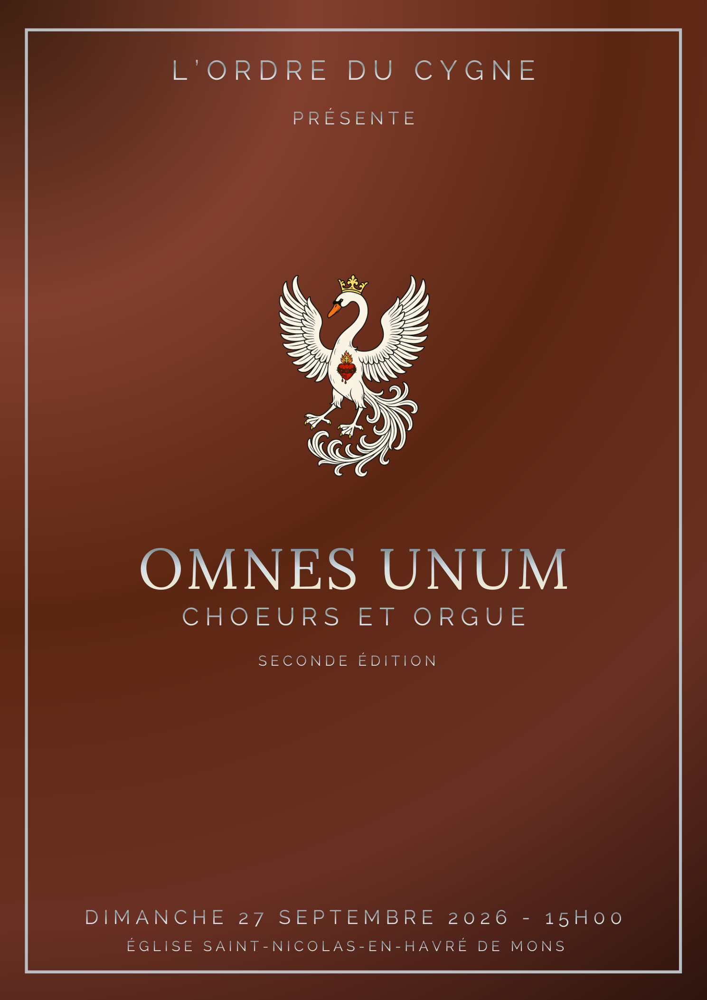
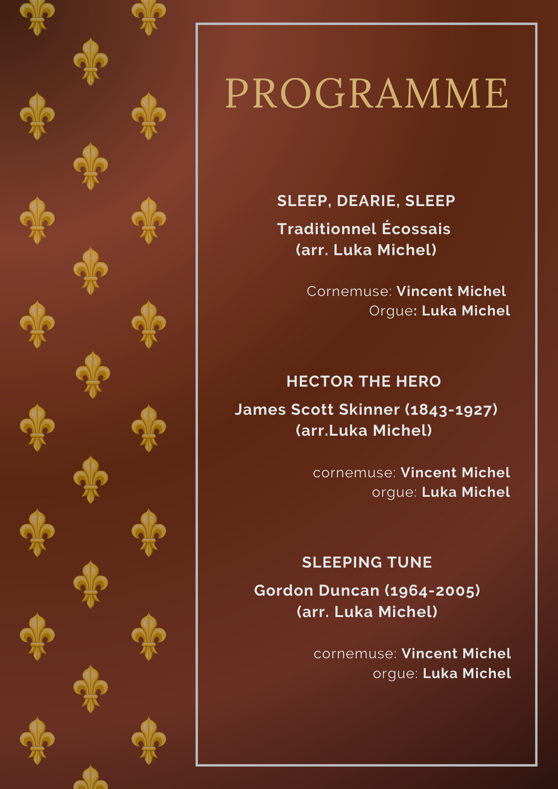
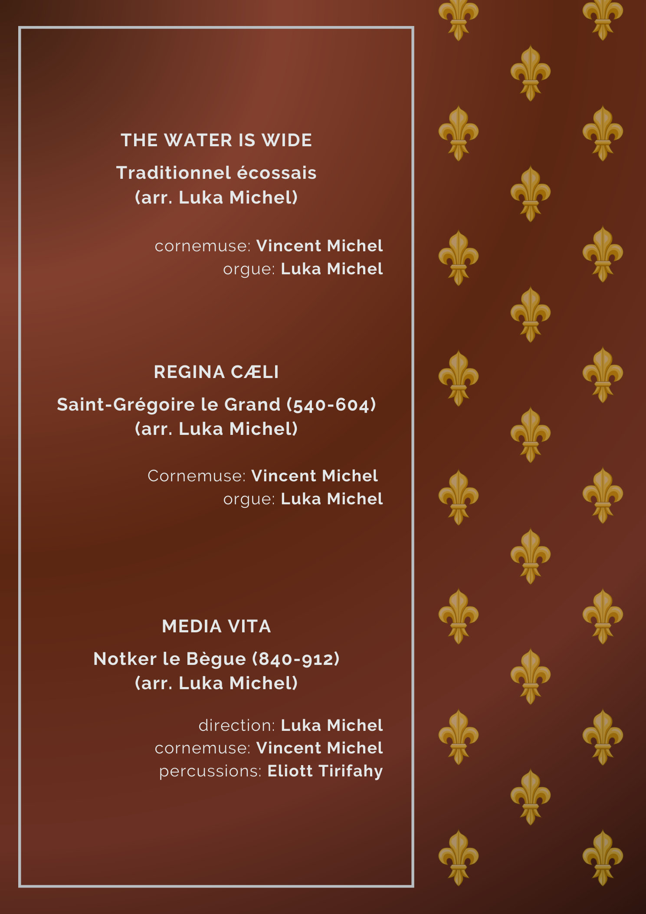
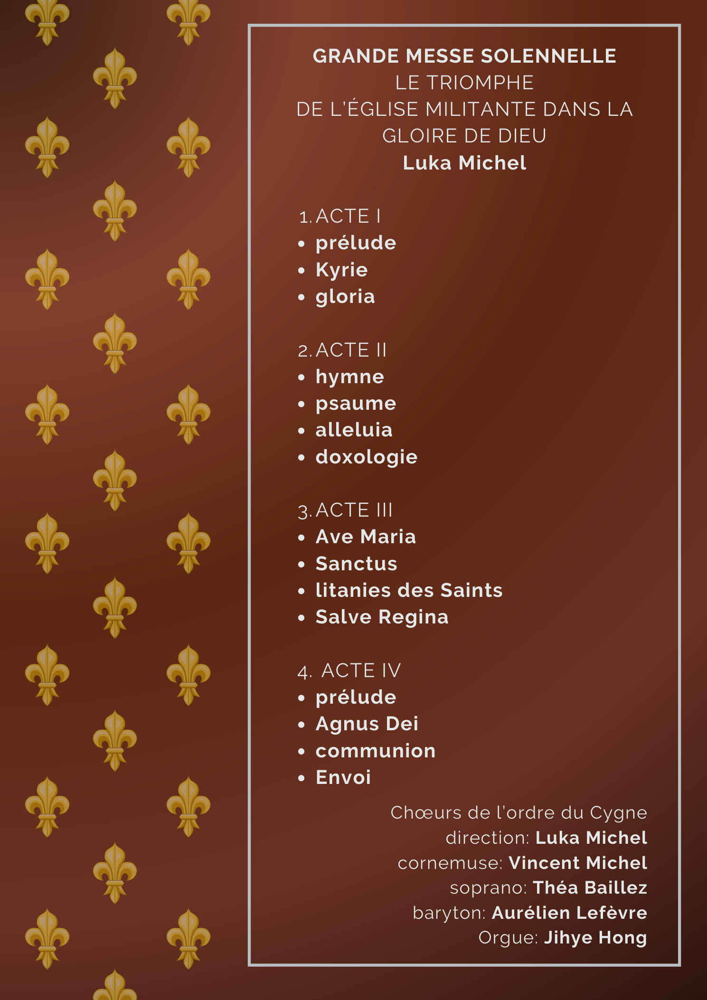
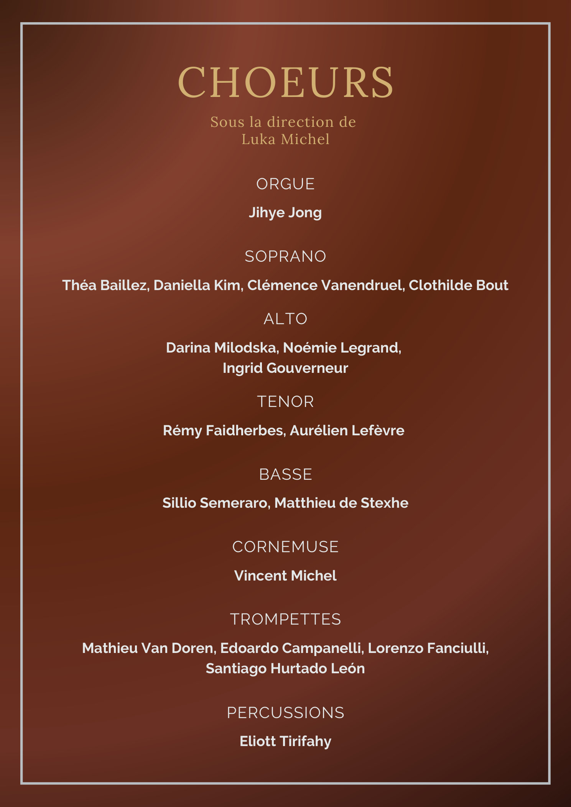
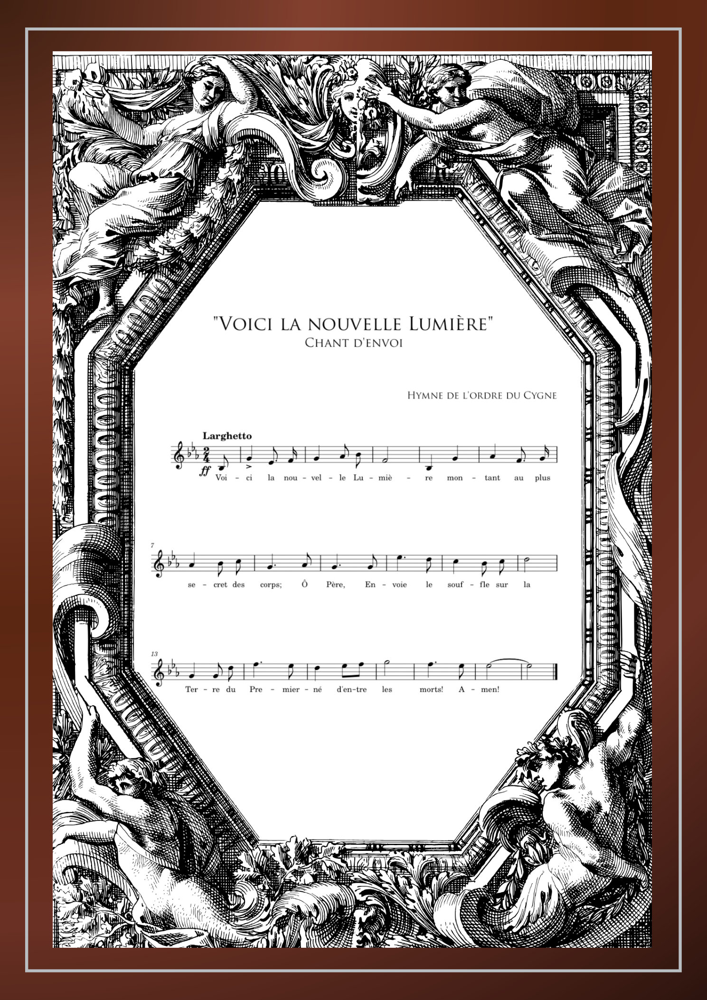
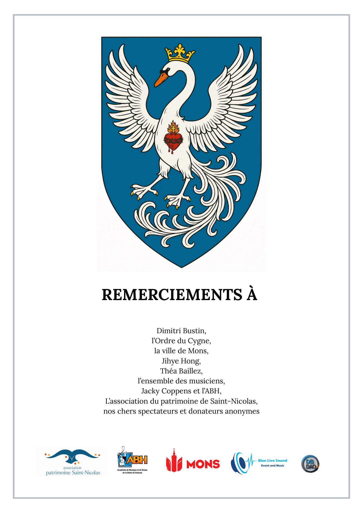

![L’ORDRE DU CYGNE Fondé en 2025, par Luka Michel, Dimitri Bustin, Mattis Mignogna et Alexandre Delahaye, l’ordre du Cygne est un collectif de compositeurs, d’artistes, et de penseurs, animés par le désir d’élévation (intellectuelle, émotionnelle, spirituelle,…), l’envie d’œuvrer pour l’Humain aux travers de projets artistiques unissant des musiciens d’origines, de croyances, de philosophies, diverses et multiples, participant ainsi à l’édification d’une société unie et tolérante. Traitant principalement de métaphysique, de philosophie, d’esthétique, et de ce qui relève des affects de l’âme, les œuvres promues par l’ordre et ses membres s’inscrivent dans la grande tradition de l´Art transcendant le réel. LUKA MICHEL Compositeur, poète et pianiste belge, Luka Michel (2006) intègre en 2024 la classe de composition de Claude Ledoux, au conservatoire royal de Mons. symboliste et romantique, son œuvre, parfumée de rose et d’encens, se caractérise par un mysticisme qui lui est propre; influencé tant par les traditions philosophiques dérivées de la doctrine de Platon, que par sa foi Catholique. Habité par une vision métaphysique de l’Art, il s’inscrit dans une mouvance spiritualiste, où l’œuvre, faisant office de pont entre le Ciel et la terre, agit au service d’un dessein transcendant la matière.](pages/page-06.jpg)
![AURÉLIEN LEFÈVRE Intégrant la chorale des “Pastoureaux” à l’âge de 8 ans, Aurélien se prends de passion pour le chant. Petit à petit, il chante ses premiers solos, lors de concerts de Noël, puis dans de plus grandes œuvres. Entré au conservatoire en 2024, il travaille sa voix de baryton pour servir au mieux les œuvres qu'il travaille, autant en tant que soliste qu'en tant que choriste, où il a déjà davantage d'expérience, forgée lors de nombreuses tournées à l'international, de la Chine, au Canada en passant par les plus belles salles d'Europe, sous la direction de chefs de renommée mondiale. Aurélien cherche à faire vibrer le public de la même façon que la musique le fait vibrer lui. VINCENT MICHEL Passionné de musique depuis son plus jeune âge, Vincent commence ses études musicales à l’âge de 8 ans, étudiant alors le violon et la clarinette. Cette passion fut ranimée par la rencontre de son épouse, elle aussi musicienne. Suite à un coup de foudre, il découvre la cornemuse et entame un cursus en 2022 à l’ABH, dans la classe de Jean-François Delforge. Il se produit régulièrement lors de concerts et d’événements privés. Toucher le cœur et l’âme est devenu sa devise. JIHYE HONG Jihye Hong a commencé le piano à l'âge de sept ans en Corée du Sud, développant très tôt un goût pour le chant et l'accompagnement de cantiques à l'église. Après s'être installée en Belgique en 2000, elle a suivi des études de politique internationale et a mené une carrière dans le domaine des affaires et de l'interprétation de conférence. Sa passion pour la musique a été ravivée par l'éducation musicale de ses quatre enfants, l'amenant à entreprendre des études d'accompagnement au piano, et d'orgue au Conservatoire royal de Mons. Titulaire d'un master en piano d’accompagnement, et d'un bachelier en orgue, elle prépare actuellement un master en orgue dans la classe d'Étienne Walhain. Elle se produit régulièrement en tant qu'organiste et accompagnatrice, tant en Belgique qu'à l'étranger.](pages/page-07.jpg)
![THÉA BAILLEZ Chantant depuis l’âge de 2 ans, Théa fut très tôt touchée par les grâces de la musique. Elle commence à étudier l’orgue à l’âge de 7 ans et devient organiste de paroisse à 14 ans. Elle intègre le conservatoire Royal de Mons en 2023, effectuant un bachelier en orgue dans la classe d’Étienne Walhain, ainsi qu’un Bachelier en chant lyrique, intégrant ainsi la classe de Marie-Laure Cœnjærts. Elle se produit régulièrement lors de concerts, tant en tant que soliste qu’en tant que choriste. Passionnée, Théa saura toucher droits vos cœurs et vos âmes de part sa voix angélique. LES CHŒURS DE L’ORDRE DU CYGNE Fondé en 2026, les chœurs de l’ordre du Cygne rassemblent des musiciens de tout niveaux (amateurs, étudiants, professionnels). Implanté à Mons, sa vocation est de souder les liens entre compositeurs et musiciens, privilégiant ainsi un travail personnellement mené par les auteurs de chacune des œuvres auprès de leurs interprètes. Ces derniers sont ainsi encouragés à découvrir quelques rudiments de direction afin d’assurer, au moins une fois, la maestria de leur propre travail! Voué à exécuter des œuvres contemporaines, l’ensemble, permet à de jeunes compositeurs de découvrir les réalités de l’orchestre, et d’ainsi avoir l’opportunité d’être joués lors d’un concert annuel. Le collectif accorde une importance toute particulière à l’accompagnement personnel des musiciens en difficultés, veillant ainsi au bien-être individuel de chacun.](pages/page-08.jpg)
![GRANDE MESSE SOLENNELLE LE TRIOMPHE DE L’ÉGLISE MILITANTE DANS LA GLOIRE DE DIEU Composée ente mars 2025 et août 2026 par Luka Michel, ce mystère scénique pour chœur, orgue, percussions, fanfare de trompettes, et solistes, évoque les mystères de la Sainte-Messe. Plongé dans un Présent Éternel, le spectateur y découvre l’évolution d’un groupe de pèlerins pénétrant au sein d’un sanctuaire oublié. ACTE I les pèlerins entrent dans le sanctuaire. Ils y implorent la clémence du maître des lieux. Au bout de leurs forces, ces derniers, désespérés par la rage des ténèbres dominant leurs Terres, se présentent au Roi, retranché dans ce palais exilé. ils sont escortés par l’ordre établi incarnant le cosmos. Vénus (force d’Amour) les éclaire, Lune (force de contemplation) & Saturne (force de Sagesse) les protègent; Soleil (force souveraine des Arts) porte la croix. Mars (force d’action), ferme la marche. les trompettes célestes retentissent et célèbrent la victoire de la lumière sur les ténèbres. La nouvelle Lumière destinée à éclairer les Hommes est née. ACTE II Voici que les épouses du maître entrent à leur tour dans le palais. Sous les yeux émus des pèlerins, elles chantent la Gloire de leur Époux. ces derniers se joignent à elles. Ils saluent la présence du Roi. ACTE III Se démarquant, une humble servante se présente. Entourée d’anges, elle annonce le Saint Mystère. bouleversés, Les anges, telle une Étreinte Sainte et Éternelle, louent l´Époux. Pendant ce temps, Soleil (force souveraine des Arts), héraut de lumière, annonce l’entrée de la Cour céleste au sein du palais. Tous, entrent glorieux dans la salle du Trône. Les pèlerins et les épouses se réjouissent et les accueilles chaleureusement. Soudainement, la sonnerie royale retenti: la Reine-mère entre. L’humble servante, est accueillie en Reine des Cieux. Lune (force de contemplation) est à ses pieds. Les astres à genou, lui sont consacrés, au service de son Fils, la Nouvelle Lumière, et pour le Salut du Monde. Soleil (force souveraine des Arts) lui jure sa fidélité au nom de l’ordre établi. La Reine Béni l’assemblée.](pages/page-09.jpg)
![ACTE IV Les trompettes sonnent l’entrée du Roi. Soudainement, l’assemblée est transportée au pied d’une sombre colline. devant leurs visages horrifiés se dressent une grande Croix. L’homme y gisant n’est autre que le Roi. Dans l’obscurité la plus totale, le maître souffre en martyr. Sa mère, la Reine, s’approche de la croix. Le moment tant redouté est arrivé: l’être tant aimé gît devant ses yeux. L’Humanité fond en larmes sous ses pieds. Les anges se joignent à la scène. L’Ami bien-Aimé du Roi s’approche. Il lui reste Fidèle malgré son incompréhension la plus totale. Pourquoi devait-il mourir ? Pourquoi ? Tout à coup, un rayon de Lumière perce les ténèbres, la croix s’illumine et le corps du Roi, s’élève en Gloire ! l’humanité s’unissant, célèbre le sacrifice d’Amour, comprenant le triomphe de ce dernier sur l’obscurité. unis et sereins, les pèlerins et les âmes prient silencieusement le Roi. Se sentant subitement animés par une Seule et Même Force, leurs âmes, en gloire, rayonnent dans le palais. Tous entonnent le même hymne. Les portes s’ouvrent, le cortège se reforme, les êtres ne formant plus qu’un seul Corps, une seule Âme, sont prêt… Ils sont la Nouvelle Lumière, le Roi de Gloire est en eux, et eux sont en Lui! S’en allant répandre dans la joie, la nouvelle de cet Amour; illuminant leurs Terres pour les Siècles des Siècles. LE MYSTÈRE le mystère (ou mistère; du latin “misterium”, cérémonie) est un genre scénique autrefois fort répandu au moyen-âge. Il met en scène, par de grands moyens artistiques (nombreux musiciens, action scénique, usages symboliques) des thèmes spirituels tels que la Passion, la vie du Christ, viens de saints,… Il se caractérise par une succession de tableaux où le réalisme et le surnaturel se côtoient. Il est l’ancêtre du théâtre; de l’opéra. L’œuvre présentée en ce jour n’est donc pas, liturgiquement parlant, une messe. Elle est une œuvre profane abordant le Sacré; une fresque scénique abordant les saints mystères de la Messe.](pages/page-10.jpg)